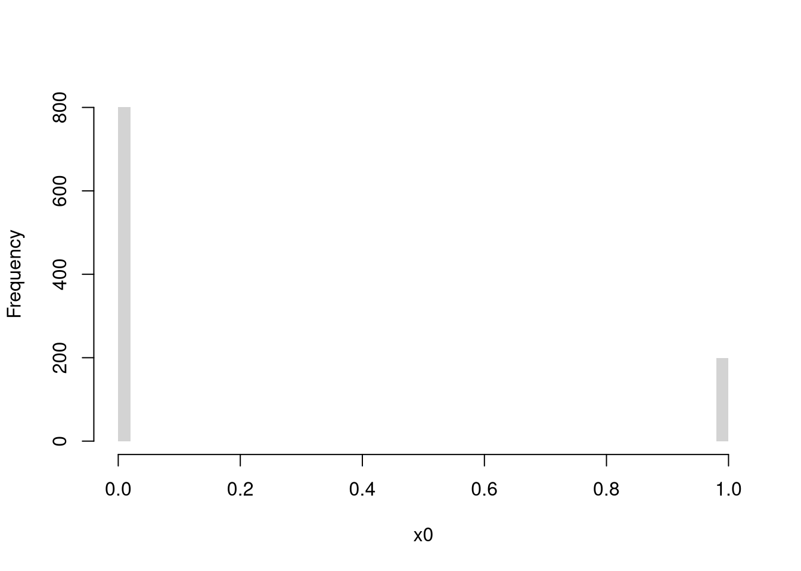
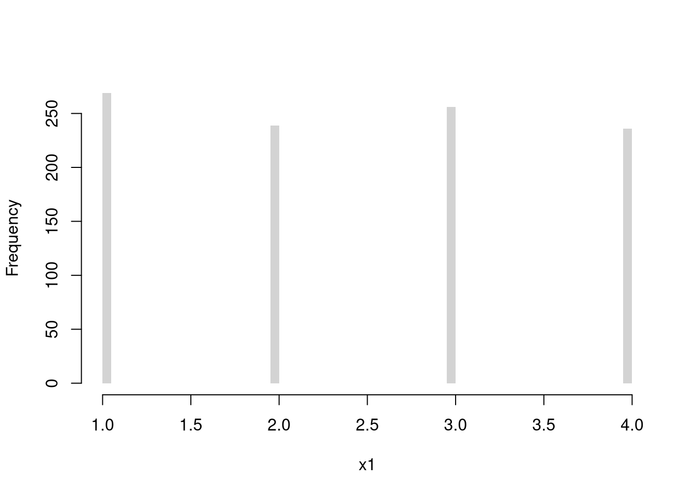

5 Probability
5.1 Random Variables
Random variables are vectors that are generated from a probabilistic process.
The sample space of a random variable refers to the set of all possible outcomes. A probability assigns to any set of events a number between \(0\) and \(1\).
There are two basic types of sample spaces:
Discrete. The random variable can take one of several discrete values. E.g., any number in \(\{1,2,3,4\}\).
## [1] 1## [1] 1 1 0 1
# plot(table(x0))
# Bernoulli (Coin Flip: Heads=1 Tails=0)
x0 <- rbinom(1000, 1, 0.2)
hist(x0, breaks=50, border=NA, main=NA, freq=T)
# plot(table(x0))
# Discrete Uniform (numbers 1,...4 all have equal probability)
library(extraDistr)
rdunif(1, 1, 4) # 1 draw## [1] 3## [1] 2 1 2
Continuous. The random variable can take one value out of an uncountably infinite number. E.g., any number between \([0,1]\) allowing for any number of decimal points.
## [1] 0.2908635 0.4980300 0.4597412
## [1] 0.3328669 -0.9546131 -1.4920782
There are many many different probability distributions. The most common ones are easily accessible
library(extraDistr)
par(mfrow=c(1,2))
for(p in c(-.5,0)){
x <- rgev(2000, mu=0, sigma=1, xi=p)
hist(x, breaks=50, border=NA, main=NA, freq=F)
}
title('GEV distributions', outer=T, line=-1)
library(extraDistr)
par(mfrow=c(1,3))
for(p in c(-1, 0,2)){
x <- rtlambda(2000, p)
hist(x, breaks=100, border=NA, main=NA, freq=F)
}
title('Tukey Lambda distributions', outer=T, line=-1)
pars <- expand.grid( c(.5,1,2), c(.5,1,2) )
par(mfrow=c(3,3))
apply(pars, 1, function(p){
x <- rbeta(2000, p[1], p[2])
hist(x, breaks=50, border=NA, main=NA, freq=F)
})
title('Beta distributions', outer=T, line=-1)
We might further distinguish types of random variables based on whether their maximum value is theoretically finite or infinite. In any case, we often summarize distributions with statistics: functions of data.
The most basic way to do this is
## Murder Assault UrbanPop Rape
## Min. : 0.800 Min. : 45.0 Min. :32.00 Min. : 7.30
## 1st Qu.: 4.075 1st Qu.:109.0 1st Qu.:54.50 1st Qu.:15.07
## Median : 7.250 Median :159.0 Median :66.00 Median :20.10
## Mean : 7.788 Mean :170.8 Mean :65.54 Mean :21.23
## 3rd Qu.:11.250 3rd Qu.:249.0 3rd Qu.:77.75 3rd Qu.:26.18
## Max. :17.400 Max. :337.0 Max. :91.00 Max. :46.00
## UrbanPop_Kcut
## (31.9,51.7]:10
## (51.7,71.3]:21
## (71.3,91.1]:19
##
##
## The values in “summary” can all be calculated individually. (E.g., the “mean” computes the [sum of all values] divided by [number of values].) There are many other combinations of statistics you can use.
5.2 Center/Spread Statistics
The most basic statistics summarize the center of a distribution and how far apart the values are spread.
In what follows, recall that \(X_{i}\) denotes the value of the \(i\)th observation.
Mean and Variance. Perhaps the most common statistic is the mean; \[\overline{X}=\frac{\sum_{i=1}^{N}X_{i}}{N}\]
# compute the mean of a random sample
x <- runif(100)
hist(x, border=NA, main=NA)
m <- mean(x)
abline(v=m, col=2, lwd=2)
title(paste0('mean= ', round(m,2)), font.main=1)
Perhaps the second most common statistic is the variance: the average squared deviation from the mean \[V_{X} =\frac{\sum_{i=1}^{N} [X_{i} - \overline{X}]^2}{N}.\] The standard deviation is simply \(s_{X} = \sqrt{V_{X}}\).2
s <- sd(x) # sqrt(var(x))
hist(x, border=NA, main=NA, freq=F)
s_lh <- c(m - s, m + s)
abline(v=s_lh, col=4)
text(s_lh, -.02, c('m-s', 'm+s'), col=4, adj=0)
title(paste0('sd= ', round(s,2)), font.main=1)
Together, these statistics summarize the central tendency and dispersion of a distribution. In some special cases, such as with the normal distribution, they completely describe the distribution. Other distributions are easier to describe with other statistics.
Median, Interquartile Range, Median Absolute Deviation. Recall that the \(q\)th quantile is the value where \(q\) percent of the data are below and (\(1-q\)) percent are above.
The median (\(q=.5\)) is the point where half of the data is lower values and the other half is higher. The first and third quartiles (\(q=.25\) and \(q=.75\)) together measure is the middle 50 percent of the data. The size of that range (interquartile range: the difference between the quartiles) represents “spread” or “dispersion” of the data.
The mean absolute deviation also measures spread \[MAD_{X} = med\left( | X_{i} - med(X) | \right).\]
## [1] 2 0 6 0 5 4 1 0 1 3 0 0 0 10 0 0 1 0 0 1 3 1 0 0 2
## [26] 2 0 0 0 4 3 0 2 3 0 0 5 2 5 0 0 1 2 1 2 0 1 0 1 0
## [1] 1#sd(x)
#IQR(x) # diff( quantile(x, probs=c(.25,.75)))
mad(x, constant=1) # median( abs(x - median(x)) )## [1] 1# other absolute deviations:
#mean( abs(x - mean(x)) )
#mean( abs(x - median(x)) )
#median( abs(x - mean(x)) )Mode and Share Concentration. Sometimes, none of the above work well. With categorical data, for example, distributions are easier to describe with other statistics. The mode is the most common observation: the value with the highest observed frequency. We can also measure the spread/dispersion of the frequencies, or compare the highest frequency to the average frequency to measure concentration at the mode.
## [,1] [,2] [,3]
## [1,] 0 0 0
## [2,] 0 0 0
## [3,] 0 0 0
## [4,] 0 0 0
## [5,] 0 0 0
## [6,] 0 0 0
## [7,] 0 0 0
## [8,] 0 0 0
## [9,] 0 0 0
## [10,] 0 0 0
## [11,] 0 0 0
## [12,] 0 0 0
## [13,] 0 0 0
## [14,] 0 0 0
## [15,] 0 0 0
## [16,] 1 0 0
## [17,] 0 0 0
## [18,] 0 1 1
## [19,] 0 0 0
## [20,] 0 0 0
## [21,] 0 0 0
## [22,] 0 0 0
## [23,] 0 0 0
## [24,] 0 0 0
## [25,] 0 0 0
## [26,] 0 0 0# Draw Random Letters 100 Times
x_id <- rowSums(rmultinom(100, 1, prob=rep(1/K,K)))
x <- lapply(1:K, function(k){
rep(LETTERS[k], x_id[k])
})
x <- factor(unlist(x), levels=LETTERS)
plot(x)
## [1] "T"## [1] 0.01953301## [1] 2.345.3 Shape Statistics
Central tendency and dispersion are often insufficient to describe a distribution. To further describe shape, we can compute these to “standard moments”:
\[Skew_{X} =\frac{\sum_{i=1}^{N} [X_{i} - \overline{X}]^3 / N}{ [s_{X}]^3 }\] \[Kurt_{X} =\frac{\sum_{i=1}^{N} [X_{i} - \overline{X}]^4 / N}{ [s_{X}]^4 }.\]
Skewness. Skew captures how symmetric the distribution is.

skewness <- function(x) {
x_bar <- mean(x)
m3 <- mean((x - x_bar)^3)
skew <- m3/(sd(x)^3)
return(skew)
}
skewness(rlnorm(1000))## [1] 3.386248## [1] -0.008147206Kurtosis. Kurt captures how many “outliers” there are.
library(extraDistr)
N <- 1000
x0 <- 0 + rtlambda(N, 0.18)
x1 <- 0 + rtlambda(N, -.5) # Larger Kurtosis
x1 <- x1 - diff(c(mean(x0), mean(x1))) # re-centered to isolate kurt.
boxplot(list(x0,x1))
abline(h=mean(x1), col=rgb(1,0,0), lty=2)
kurtosis <- function(x) {
x_bar <- mean(x)
m4 <- mean((x - x_bar)^4)
kurt <- m4/(sd(x)^4) - 3
return(kurt)
}
kurtosis(x0)## [1] -0.1626323## [1] 21.83611Clusters/Gaps. You can also describe distributions in terms of how clustered the values are

But remember: a picture is worth a thousand words.
# Random Number Generator
r_ugly1 <- function(n, theta1=c(-8,-1), theta2=c(-2,2), rho=.25){
omega <- rbinom(n, size=1, rho)
epsilon <- omega * runif(n, theta1[1], theta2[1]) +
(1-omega) * rnorm(n, theta1[2], theta2[2])
return(epsilon)
}
# Large Sample
par(mfrow=c(1,1))
X <- seq(-12,6,by=.001)
rx <- r_ugly1(1000000)
hist(rx, breaks=1000, freq=F, border=NA,
xlab="x", main='')
5.4 Further Reading
Many introductory econometrics textbooks have a good appendix on probability and statistics. There are many useful texts online too
- [Refresher] https://www.khanacademy.org/math/statistics-probability/probability-library/basic-theoretical-probability/a/probability-the-basics
- https://www.atmos.albany.edu/facstaff/timm/ATM315spring14/R/IPSUR.pdf
- https://math.dartmouth.edu/~prob/prob/prob.pdf
- https://bookdown.org/speegled/foundations-of-statistics/
- https://bookdown.org/probability/beta/discrete-random-variables.html
- https://www.econometrics-with-r.org/2.1-random-variables-and-probability-distributions.html
- https://probability4datascience.com/ch02.html
- https://rc2e.com/probability
- https://book.stat420.org/probability-and-statistics-in-r.html
- https://statsthinking21.github.io/statsthinking21-R-site/probability-in-r-with-lucy-king.html
- https://bookdown.org/probability/statistics/
- https://bookdown.org/probability/beta/
- https://bookdown.org/a_shaker/STM1001_Topic_3/
- https://bookdown.org/fsancier/bookdown-demo/
- https://bookdown.org/kevin_davisross/probsim-book/
- https://bookdown.org/machar1991/ITER/2-pt.html
- https://www.atmos.albany.edu/facstaff/timm/ATM315spring14/R/IPSUR.pdf
- https://math.dartmouth.edu/~prob/prob/prob.pdf
Many random variables are related to each other
- https://en.wikipedia.org/wiki/Relationships_among_probability_distributions
- https://www.math.wm.edu/~leemis/chart/UDR/UDR.html
- https://qiangbo-workspace.oss-cn-shanghai.aliyuncs.com/2018-11-11-common-probability-distributions/distab.pdf
Note that numbers randomly generated on your computer cannot be truly random, they are “Pseudorandom”.
Note that a “corrected version” is used by R and many statisticians: \(V_{X} =\frac{\sum_{i=1}^{N} [X_{i} - \overline{X}]^2}{N-1}\).↩︎